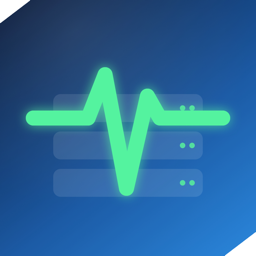

Support
LabPulse: Homelab MonitorFound a bug or have a question or idea? Open an issue on GitHub. Please include your iOS version and what kind of target is involved (HTTP, TCP or Proxmox), but never your API tokens.
Common questions
All my targets show as down
Make sure LabPulse has Local Network access: Settings › Privacy & Security › Local Network › LabPulse. Away from home, your home targets can only be reached through a VPN such as Tailscale or WireGuard; otherwise LabPulse pauses them (Away mode) instead of marking them down.
How do I create a read-only Proxmox token?
Run these on a Proxmox node shell, then enter the token ID monitor@pve!labpulse and the secret in LabPulse:
pveum user add monitor@pve --comment "LabPulse read-only" pveum user token add monitor@pve labpulse --privsep 1 pveum acl modify / --tokens 'monitor@pve!labpulse' --roles PVEAuditor
LabPulse only reads data and never changes anything on your server.
"Certificate not trusted"
Proxmox uses a self-signed certificate by default. Edit the target and turn on Allow Self-Signed Certificate. It applies only to that one host.
"Blocked by App Transport Security"
Plain http:// is allowed for local IP addresses and .local names. For other hostnames, use https://.
How do I add widgets?
Long-press your Home Screen or Lock Screen, tap Edit › Add Widget and choose LabPulse. Long-press a widget and choose Edit Widget to pick which target or Proxmox node it shows.
How often are targets checked?
Every 5, 10 or 15 minutes while the app is open (Settings › Check Interval) and when widgets refresh. In the background, iOS decides when LabPulse may run, usually every 15 minutes or more. Tap the refresh button on a widget to check immediately.